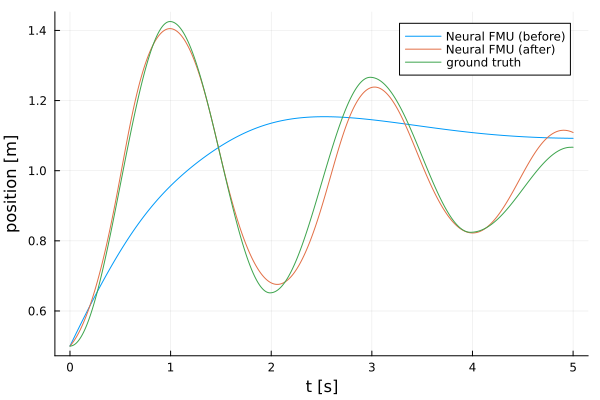

Neural FMUs in model exchange (ME) mode
Tutorial by Tobias Thummerer
Last edit: 03.09.2024
License
# Copyright (c) 2021 Tobias Thummerer, Lars Mikelsons
# Licensed under the MIT license.
# See LICENSE (https://github.com/thummeto/FMIFlux.jl/blob/main/LICENSE) file in the project root for details.Introduction
Functional mock-up units (FMUs) can easily be seen as containers for simulation models.
This example shows how to build a very easy neural FMU by combining a model exchange (ME) FMU and an artificial neural network (ANN). The goal is, to train the hybrid model based on a very simple simulation model.
Packages
First, import the packages needed:
# imports
using FMI # for importing and simulating FMUs
using FMIFlux # for building neural FMUs
using FMIFlux.Flux # the default machine learning library in Julia
using FMIZoo # a collection of demo FMUs
using DifferentialEquations # the (O)DE solver suite in Julia
using Plots # for plotting some results
import Random # for random variables (and random initialization)
Random.seed!(1234) # makes our program deterministicRandom.TaskLocalRNG()Code
Next, start and stop time are set for the simulation, as well as some intermediate time points tSave to record simulation results.
tStart = 0.0
tStep = 0.01
tStop = 5.0
tSave = collect(tStart:tStep:tStop)501-element Vector{Float64}:
0.0
0.01
0.02
0.03
0.04
0.05
0.06
0.07
0.08
0.09
0.1
0.11
0.12
⋮
4.89
4.9
4.91
4.92
4.93
4.94
4.95
4.96
4.97
4.98
4.99
5.0Complex FMU (ground truth training data)
First, let's load a model from the FMIZoo.jl, an easy pendulum including some friction. We will use that to generate training data.
# let's load the FMU in ME-mode (some FMUs support multiple simulation modes)
fmu_gt = loadFMU("SpringFrictionPendulum1D", "Dymola", "2022x"; type=:ME)
# and print some info
info(fmu_gt) #################### Begin information for FMU ####################
Model name: SpringFrictionPendulum1D
FMI-Version: 2.0
GUID: {2e178ad3-5e9b-48ec-a7b2-baa5669efc0c}
Generation tool: Dymola Version 2022x (64-bit), 2021-10-08
Generation time: 2022-05-19T06:54:12Z
Var. naming conv.: structured
Event indicators: 24
Inputs: 0
Outputs: 0
States: 2
33554432 ["mass.s"]
33554433 ["mass.v", "mass.v_relfric"]
Parameters: 12
16777216 ["fricScale"]
16777217 ["s0"]
16777218 ["v0"]
16777219 ["fixed.s0"]
...
16777223 ["mass.smin"]
16777224 ["mass.v_small"]
16777225 ["mass.L"]
16777226 ["mass.m"]
16777227 ["mass.fexp"]
Supports Co-Simulation: true
Model identifier: SpringFrictionPendulum1D
Get/Set State: true
Serialize State: true
Dir. Derivatives: true
Var. com. steps: true
Input interpol.: true
Max order out. der.: 1
Supports Model-Exchange: true
Model identifier: SpringFrictionPendulum1D
Get/Set State: true
Serialize State: true
Dir. Derivatives: true
##################### End information for FMU #####################Next, the start state x0 is defined, together with some variables to be recorded vrs (they are identified by the names that where used during export of the FMU). The FMU is simulated and the results are plotted.
# the initial state we start our simulation with, position (0.5 m) and velocity (0.0 m/s) of the pendulum
x0 = [0.5, 0.0]
# some variables we are interested in, so let's record them: position, velocity and acceleration
vrs = ["mass.s", "mass.v", "mass.a"]
# simulate the FMU ...
sol_gt = simulate(fmu_gt, (tStart, tStop); recordValues=vrs, saveat=tSave, x0=x0)
# ... and plot it! (but only the recorded values, not the states)
plot(sol_gt; states=false) [34mSimulating ME-FMU ... 0%|█ | ETA: N/A[39m
[34mSimulating ME-FMU ... 100%|██████████████████████████████| Time: 0:00:16[39m
After the simulation, specific variables can be extracted. We will use them for the later training - as training data!
pos_gt = getValue(sol_gt, "mass.s")501-element Vector{Float64}:
0.5
0.5002131418271644
0.500854887495059
0.5019281657516876
0.5034351795370763
0.50537742474533
0.5077556973743648
0.5105701110158936
0.5138201163230011
0.5175045276221266
0.5216215241870015
0.5261686593877334
0.5311429006829193
⋮
1.0616593561654388
1.0627701713285898
1.0637521434353139
1.0646032889175199
1.0653217119141543
1.0659056034549985
1.0663532416435237
1.0666629937790932
1.0668333163759727
1.0668685641881956
1.0668685641871958
1.0668685641861957Now, we can release the FMU again - we don't need it anymore.
unloadFMU(fmu_gt)Simple FMU
Now, we load an even more simple system, that we use as core for our neural FMU: A pendulum without friction. Again, we load, simulate and plot the FMU and its results.
fmu = loadFMU("SpringPendulum1D", "Dymola", "2022x"; type=:ME)
info(fmu)
sol_fmu = simulate(fmu, (tStart, tStop); recordValues=vrs, saveat=tSave)
plot(sol_fmu)#################### Begin information for FMU ####################
Model name: SpringPendulum1D
FMI-Version: 2.0
GUID: {fc15d8c4-758b-48e6-b00e-5bf47b8b14e5}
Generation tool: Dymola Version 2022x (64-bit), 2021-10-08
Generation time: 2022-05-19T06:54:23Z
Var. naming conv.: structured
Event indicators: 0
Inputs: 0
Outputs: 0
States: 2
33554432 ["mass.s"]
33554433 ["mass.v"]
Parameters: 7
16777216 ["mass_s0"]
16777217 ["mass_v0"]
16777218 ["fixed.s0"]
16777219 ["spring.c"]
16777220 ["spring.s_rel0"]
16777221 ["mass.m"]
16777222 ["mass.L"]
Supports Co-Simulation: true
Model identifier: SpringPendulum1D
Get/Set State: true
Serialize State: true
Dir. Derivatives: true
Var. com. steps: true
Input interpol.: true
Max order out. der.: 1
Supports Model-Exchange: true
Model identifier: SpringPendulum1D
Get/Set State: true
Serialize State: true
Dir. Derivatives: true
##################### End information for FMU #####################Neural FMU
Now the fun begins, let's combine the loaded FMU and the ANN!
# get number of states
numStates = getNumberOfStates(fmu)
net = Chain(x -> fmu(x=x, dx_refs=:all), # we can use the FMU just like any other neural network layer!
Dense(numStates, 16, tanh), # some additional dense layers ...
Dense(16, 16, tanh),
Dense(16, numStates))
# the neural FMU is constructed by providing the FMU, the net topology, start and stop time and a solver (here: Tsit5)
neuralFMU = ME_NeuralFMU(fmu, net, (tStart, tStop), Tsit5(); saveat=tSave);Now, we can check how the neural FMU performs before the actual training!
solutionBefore = neuralFMU(x0)
plot(solutionBefore)Not that ideal... let's add our ground truth data to compare!
plot!(sol_gt; values=false)
Ufff... only the starting state for position and velocity is correct. Training seems a good idea here!
Loss function
Before we can train the neural FMU, we need to define a loss function. We use the common mean-squared-error (MSE) here.
function loss(p)
# simulate the neural FMU by calling it
sol_nfmu = neuralFMU(x0; p=p)
# we use the first state, because we know that's the position
pos_nfmu = getState(sol_nfmu, 1; isIndex=true)
# we could also identify the position state by its name
#pos_nfmu = getState(solution, "mass.s")
FMIFlux.Losses.mse(pos_gt, pos_nfmu)
endloss (generic function with 1 method)Callback
Further, we define a simple logging function for our training.
global counter = 0
function callback(p)
global counter += 1
if counter % 20 == 1
lossVal = loss(p[1])
@info "Loss [$(counter)]: $(round(lossVal, digits=6))"
end
endcallback (generic function with 1 method)Training
For training, we only need to extract the parameters to optimize and pass it to a pre-build train command FMIFlux.train!.
optim = Adam()
p = FMIFlux.params(neuralFMU)
FMIFlux.train!(
loss,
neuralFMU,
Iterators.repeated((), 500),
optim;
cb=()->callback(p)
) [36m[1m[ [22m[39m[36m[1mInfo: [22m[39mLoss [1]: 0.061175
[36m[1m[ [22m[39m[36m[1mInfo: [22m[39mLoss [21]: 0.040784
[36m[1m[ [22m[39m[36m[1mInfo: [22m[39mLoss [41]: 0.040451
[36m[1m[ [22m[39m[36m[1mInfo: [22m[39mLoss [61]: 0.039743
[36m[1m[ [22m[39m[36m[1mInfo: [22m[39mLoss [81]: 0.039087
[36m[1m[ [22m[39m[36m[1mInfo: [22m[39mLoss [101]: 0.03815
[36m[1m[ [22m[39m[36m[1mInfo: [22m[39mLoss [121]: 0.035558
[36m[1m[ [22m[39m[36m[1mInfo: [22m[39mLoss [141]: 0.021058
[36m[1m[ [22m[39m[36m[1mInfo: [22m[39mLoss [161]: 0.006635
[36m[1m[ [22m[39m[36m[1mInfo: [22m[39mLoss [181]: 0.004409
[36m[1m[ [22m[39m[36m[1mInfo: [22m[39mLoss [201]: 0.003957
[36m[1m[ [22m[39m[36m[1mInfo: [22m[39mLoss [221]: 0.003682
[36m[1m[ [22m[39m[36m[1mInfo: [22m[39mLoss [241]: 0.003449
[36m[1m[ [22m[39m[36m[1mInfo: [22m[39mLoss [261]: 0.00321
[36m[1m[ [22m[39m[36m[1mInfo: [22m[39mLoss [281]: 0.002995
[36m[1m[ [22m[39m[36m[1mInfo: [22m[39mLoss [301]: 0.002806
[36m[1m[ [22m[39m[36m[1mInfo: [22m[39mLoss [321]: 0.002578
[36m[1m[ [22m[39m[36m[1mInfo: [22m[39mLoss [341]: 0.002362
[36m[1m[ [22m[39m[36m[1mInfo: [22m[39mLoss [361]: 0.002152
[36m[1m[ [22m[39m[36m[1mInfo: [22m[39mLoss [381]: 0.001956
[36m[1m[ [22m[39m[36m[1mInfo: [22m[39mLoss [401]: 0.001789
[36m[1m[ [22m[39m[36m[1mInfo: [22m[39mLoss [421]: 0.001617
[36m[1m[ [22m[39m[36m[1mInfo: [22m[39mLoss [441]: 0.001453
[36m[1m[ [22m[39m[36m[1mInfo: [22m[39mLoss [461]: 0.001301
[36m[1m[ [22m[39m[36m[1mInfo: [22m[39mLoss [481]: 0.00116Results
Finally, we can compare the results before and after training, as well as the ground truth data:
solutionAfter = neuralFMU(x0)
fig = plot(solutionBefore; stateIndices=1:1, label="Neural FMU (before)", ylabel="position [m]")
plot!(fig, solutionAfter; stateIndices=1:1, label="Neural FMU (after)")
plot!(fig, tSave, pos_gt; label="ground truth")
fig
Finally, the FMU is unloaded and memory released.
unloadFMU(fmu)Source
[1] Tobias Thummerer, Lars Mikelsons and Josef Kircher. 2021. NeuralFMU: towards structural integration of FMUs into neural networks. Martin Sjölund, Lena Buffoni, Adrian Pop and Lennart Ochel (Ed.). Proceedings of 14th Modelica Conference 2021, Linköping, Sweden, September 20-24, 2021. Linköping University Electronic Press, Linköping (Linköping Electronic Conference Proceedings ; 181), 297-306. DOI: 10.3384/ecp21181297
Build information
# check package build information for reproducibility
import Pkg; Pkg.status()[32m[1mStatus[22m[39m `D:\a\FMIFlux.jl\FMIFlux.jl\examples\Project.toml`
[90m[0c46a032] [39mDifferentialEquations v7.14.0
[90m[14a09403] [39mFMI v0.14.1
[90m[fabad875] [39mFMIFlux v0.13.0 `D:\a\FMIFlux.jl\FMIFlux.jl`
[90m[9fcbc62e] [39mFMIImport v1.0.8
[90m[724179cf] [39mFMIZoo v1.1.0
[90m[587475ba] [39mFlux v0.14.22
[90m[7073ff75] [39mIJulia v1.25.0
[32m⌃[39m [90m[033835bb] [39mJLD2 v0.4.53
[90m[b964fa9f] [39mLaTeXStrings v1.4.0
[90m[f0f68f2c] [39mPlotlyJS v0.18.14
[90m[91a5bcdd] [39mPlots v1.40.8
[90m[9a3f8284] [39mRandom
[36m[1mInfo[22m[39m Packages marked with [32m⌃[39m have new versions available and may be upgradable.